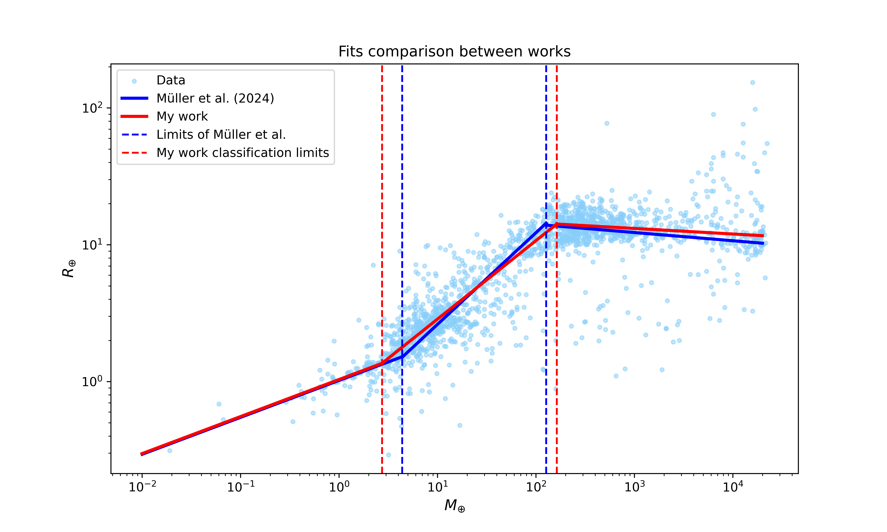
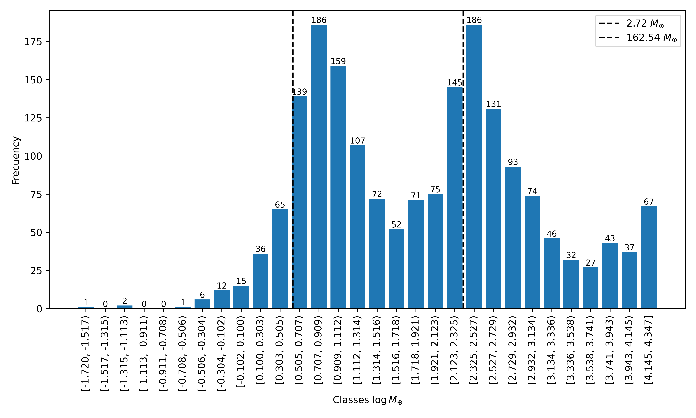
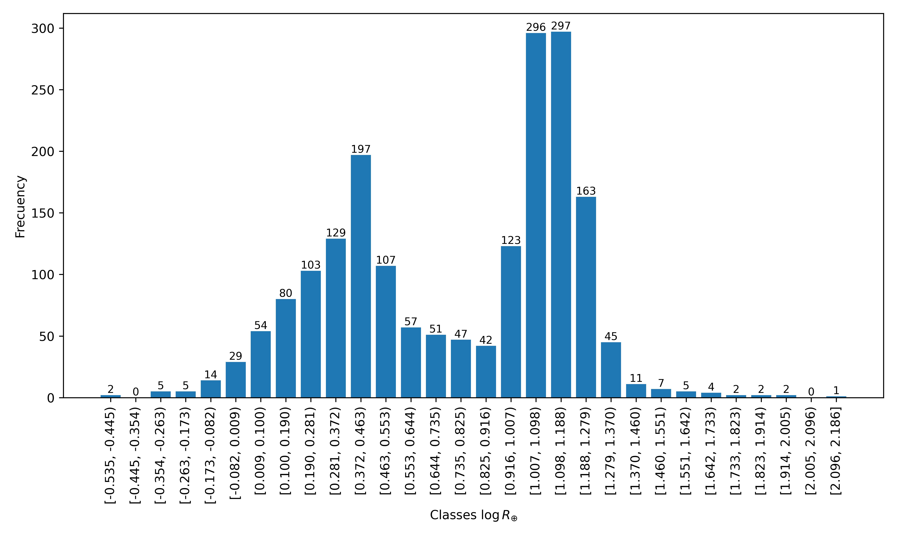
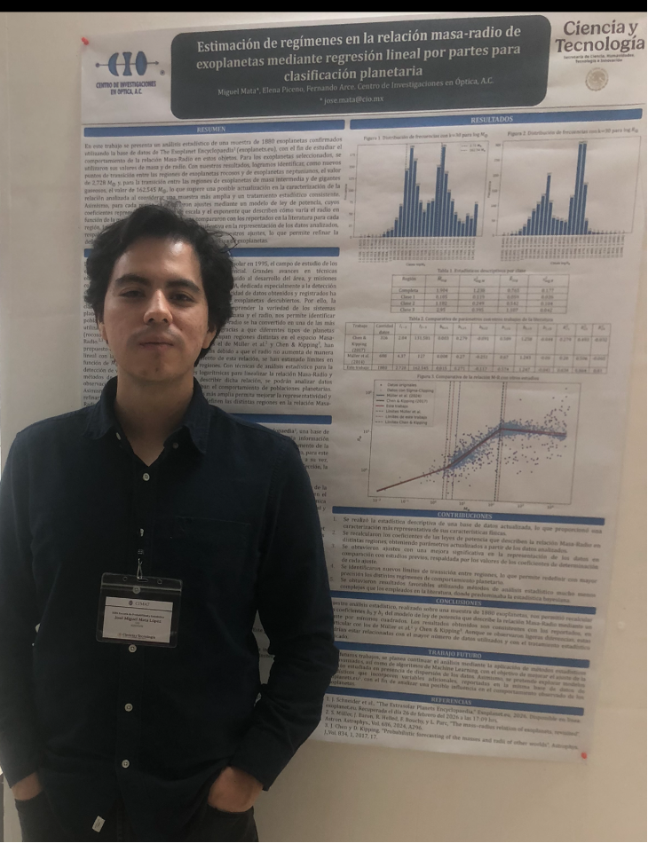

Projects
Exoplanet Database Analysis
This project focuses on the statistical analysis of exoplanet data to better understand planetary structure and classification. The dataset was obtained from the Exoplanet.eu database, which provides observational data for thousands of confirmed exoplanets.
Mass–Radius Relationship Analysis
Exoplanet Classification
I analyzed a dataset of 1881 exoplanets to study the relationship between mass and radius. Using piecewise linear regression, I identified distinct planetary regimes and explored transitions between different types of planets.
Building upon the work of Müller et al. (2024), who proposed a classification scheme based on the mass–radius relationship using a dataset of 688 exoplanets, I extended their approach by incorporating a significantly larger dataset obtained from the Exoplanet.eu database. Their work defined transition boundaries between rocky planets, intermediate-mass planets, and gas giants.
Using their proposed framework as a reference, I recalculated the classification boundaries between these regimes, identifying updated transition limits supported by the larger dataset. This allowed for a more robust characterization of planetary populations and their structural differences.
Additionally, I analyzed the frequency distributions of planetary mass and radius to further investigate the statistical properties of these populations.

The distributions of mass and radius were also analyzed.


These results were presented as a scientific poster at the XXIV School of Probability and Statistics (CIMAT).

Ongoing Work: Bayesian Approach
The project has evolved toward a probabilistic approach using Bayesian statistics. The goal is to quantify uncertainties in planetary classification and improve the identification of structural transitions between planetary regimes.
This work is currently ongoing and will be presented at the XXIII Encounter: Women’s Participation in Science.